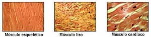
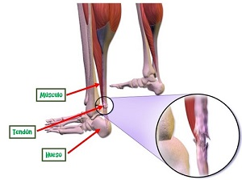

Dentro del sistema muscular, distinguimos dos tipos de músculos, en base a la función que realiza, forma y tipo de movilidad:
- Músculos voluntarios: son aquellos que realizan movimientos en los que somos conscientes de su acción, como, por ejemplo, el cuádriceps.
- Músculos involuntarios: son aquellos que realizan movimientos sin nosotros ser conscientes de ello, como, por ejemplo, los músculos del corazón.
Los músculos que forman parte del aparato locomotor son los músculos voluntarios.
Dentro del aparato locomotor, nos encontramos con tres tipos de tejido muscular:
- Estriado o esquelético: son los músculos voluntarios que conforman el aparato locomotor y están unidos a los huesos. Por ejemplo, los abdominales.
- Liso: son aquellos tejidos que se relajan o contraen, gracias a los estímulos recibidos por el sistema nervioso. Por ejemplo, los músculos que recubren nuestro estómago.
- Cardiaco: son los músculos que se encuentran en el corazón. Realizan movimientos involuntarios para el correcto funcionamiento del mismo.
A continuación, puedes ver una imagen de los tres tipos de tejido muscular a vista de microscopio.

Los tendones son tejidos fibrosos en forma de banda, queson muy resistentes. Se encuentran en los extremos de cada músculo y su función es unir el músculo con el hueso.
También pueden unir los músculos a algunas estructuras del cuerpo humano como puede ser al globo ocular.
Los músculos desarrollan fuerza, que es trasmitida al hueso, y, gracias a los tendones, toda esa fuerza es convertida en movimiento.
La mayor parte de los músculos tienen un tendón en cada extremo de los mismos
A continuación, puedes ver la imagen del tendón de Aquiles, en este caso fisurado. Y podrás observar su unión con el hueso y el músculo.
